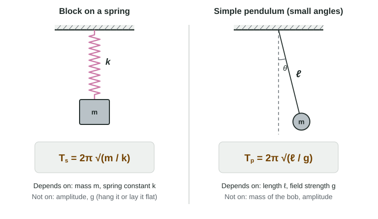

Frequency and Period of SHM
The period of a block on a spring is T = 2π√(m/k) and that of a small-angle pendulum is T = 2π√(ℓ/g); neither depends on the amplitude, the pendulum's period does not depend on the bob's mass, and f = 1/T.
Part 1 · Hook
Why this matters
Part 2 · Before you start
What this builds on
Part 3 · Prerequisite check
Quick check before you start
1. A wheel turns 5 times per second. What is its period?
- 0.20 s
- 5.0 s
- 0.50 s
- 2.0 s
Show the answer
T = 1/f = 1/(5 Hz) = 0.20 s.
- Correct: 0.20 s:
- 5.0 s:
- 0.50 s:
- 2.0 s:
2. In simple harmonic motion, the restoring force is
- proportional to the displacement and opposite to it
- constant and opposite to the velocity
- largest at the equilibrium position
- in the direction of motion
Show the answer
SHM is defined by F = −kx.
- Correct: proportional to the displacement and opposite to it:
- constant and opposite to the velocity:
- largest at the equilibrium position:
- in the direction of motion:
3. If y = √x and x is multiplied by 9, y is multiplied by
- 3
- 9
- 81
- 4.5
Show the answer
√9 = 3.
- Correct: 3:
- 9:
- 81:
- 4.5:
Part 4 · See it
See it first

Part 5 · Step by step
How it works, step by step
- A larger mass on the same springaccelerates less for the same restoring force, so it takes longer to turn around: T grows as √m
- A stiffer spring (larger k)gives a larger restoring force at each position, so the period shrinks as 1/√k
- A larger amplitudemeans more distance to cover but proportionally more force and speed, so the period does not change
- For a pendulum, a heavier bobhas more weight pulling it back and more inertia in exactly the same ratio, so its period does not change either
Part 6 · Key ideas
Key ideas
- The period T is the time for one full cycle; the frequency is f = 1/T, in hertz (cycles per second). Time many cycles and divide to measure T well.
- A block on a spring: T = 2π√(m/k). More mass, longer period; stiffer spring, shorter period. No amplitude and no g in it.
- A simple pendulum at small angles: T = 2π√(ℓ/g). Longer string, longer period; stronger gravitational field, shorter period. No mass in it.
- Functional dependence: four times the mass (or length) doubles the period, because T goes as the square root.
Part 7 · Misconception
A common mistake
The wrong idea: A heavier pendulum bob swings more slowly, because T = 2π√(m/k) has the mass in it.
What actually happens: That formula is for a block on a spring. A pendulum's period is T = 2π√(ℓ/g): the heavier bob is pulled back harder but has more inertia in the same ratio, so its period is unchanged.
Part 8 · Check yourself
Check yourself
Exam-style questions. Anything you miss goes into your review queue.
Data table
Timing a block on a spring
A student hangs blocks of different mass from the same spring, pulls each one down a few centimeters, releases it, and uses a stopwatch to time 10 complete oscillations.
| Mass m (kg) | Time for 10 oscillations (s) |
|---|---|
| 0.10 | 4.95 |
| 0.20 | 7.05 |
| 0.40 | 9.90 |
| 0.80 | 14.1 |
1. What is the period of the 0.20 kg block? Give the value and its unit.
Type a number and its unit.
Show the answer
T = (time for 10 oscillations)/10 = 7.05 s / 10 = 0.705 s. Timing many oscillations and dividing shrinks the effect of your reaction time.
- Answer: 0.705 s
2. From 0.20 kg to 0.80 kg the mass is multiplied by 4. How does the period change, and does that agree with T = 2π√(m/k)?
- It doubles, which agrees: T is proportional to √m
- It quadruples, which agrees: T is proportional to m
- It doubles, which disagrees: T should quadruple
- It halves, which agrees: a heavier block is pulled harder
Show the answer
The 10-oscillation time goes from 7.05 s to 14.1 s, a factor of 2. T ∝ √m, and √4 = 2.
- Correct: It doubles, which agrees: T is proportional to √m: Right: the data and the equation both give a factor of 2.
- It quadruples, which agrees: T is proportional to m: The data show a factor of 2, not 4; and T depends on √m, not m.
- It doubles, which disagrees: T should quadruple: The equation predicts a factor of √4 = 2, so the data agree with it.
- It halves, which agrees: a heavier block is pulled harder: A heavier block has more inertia, so it takes longer; the period grows.
3. Use the 0.80 kg trial to find the spring constant of the spring. Give the value and its unit.
Type a number and its unit.
Show the answer
T = 14.1 s / 10 = 1.41 s. Square T = 2π√(m/k): T² = 4π²m/k, so k = 4π²m/T² = 4π²(0.80 kg)/(1.41 s)² = 15.9 N/m ≈ 16 N/m.
- Answer: 16 N/m
4. The student wants a straight-line graph whose slope gives the spring constant. What should be plotted?
- T² against m; the slope is 4π²/k
- T against m; the slope is 2π/k
- T against √m; the slope is k/2π
- T² against m; the slope is k/4π²
Show the answer
Squaring T = 2π√(m/k) gives T² = (4π²/k)·m, the form y = (slope)·x with y = T² and x = m. So k = 4π²/slope.
- Correct: T² against m; the slope is 4π²/k: Right: T² is proportional to m, with slope 4π²/k.
- T against m; the slope is 2π/k: T against m is a curve (T ∝ √m), so it has no single slope.
- T against √m; the slope is k/2π: T against √m is a straight line, but its slope is 2π/√k, not k/2π.
- T² against m; the slope is k/4π²: The variables are right but the slope is upside down: T² = (4π²/k)m.
5. A block oscillates on a horizontal spring. Predict how its period changes for each separate change.
| Variable | Change |
|---|---|
| The block is replaced by one with twice the mass | — |
| The block is pulled twice as far before release | — |
| The spring is replaced by a stiffer one | — |
Show the answer
The period of a block on a spring depends on m and k: T = 2π√(m/k).
- The block is replaced by one with twice the mass: increases. T = 2π√(m/k): more mass, more inertia, longer period (by √2).
- The block is pulled twice as far before release: no change. A does not appear in T = 2π√(m/k): a larger amplitude means more distance but also more force and more speed.
- The spring is replaced by a stiffer one: decreases. Larger k means a larger restoring force at each x, so the block turns around sooner.
6. A simple pendulum swings through a small angle. Predict how its period changes for each separate change.
| Variable | Change |
|---|---|
| The bob is replaced by one with twice the mass | — |
| The string is made four times as long | — |
| The pendulum is taken to a planet with a stronger gravitational field | — |
Show the answer
A pendulum's period depends on its length and on g, not on the bob's mass.
- The bob is replaced by one with twice the mass: no change. A heavier bob has a larger weight but also more inertia; m cancels and T = 2π√(ℓ/g) has no m.
- The string is made four times as long: increases. T ∝ √ℓ, so the period doubles.
- The pendulum is taken to a planet with a stronger gravitational field: decreases. Larger g gives a larger restoring force, so T = 2π√(ℓ/g) is shorter.
7. A student claims that a pendulum with a heavier bob has a longer period, because T = 2π√(m/k) shows that more mass means a longer period. What is wrong with the claim?
- That equation is for a block on a spring; a pendulum's period is 2π√(ℓ/g), with no mass in it
- Nothing: a heavier bob has more inertia, so it does swing more slowly
- The equation is right, but a heavier bob also stretches the string, which shortens the period
- A heavier bob has a larger weight, so its period is shorter, not longer
Show the answer
For a pendulum, the restoring force comes from the bob's weight, which is proportional to its mass. Twice the mass gives twice the restoring force on twice the inertia, so the acceleration and the period do not change. Using the spring formula for a pendulum is a classic exam error.
- Correct: That equation is for a block on a spring; a pendulum's period is 2π√(ℓ/g), with no mass in it: Right: wrong formula for the system; the pendulum's period has no mass.
- Nothing: a heavier bob has more inertia, so it does swing more slowly: More inertia is matched by more weight pulling it back, so the two effects cancel.
- The equation is right, but a heavier bob also stretches the string, which shortens the period: An ideal string does not stretch, and the spring formula still does not apply.
- A heavier bob has a larger weight, so its period is shorter, not longer: The larger weight is canceled by the larger inertia; the period is unchanged.
Part 9 · Summary
Summary
Part 10 · Up next
What comes next
Part 11 · Connections